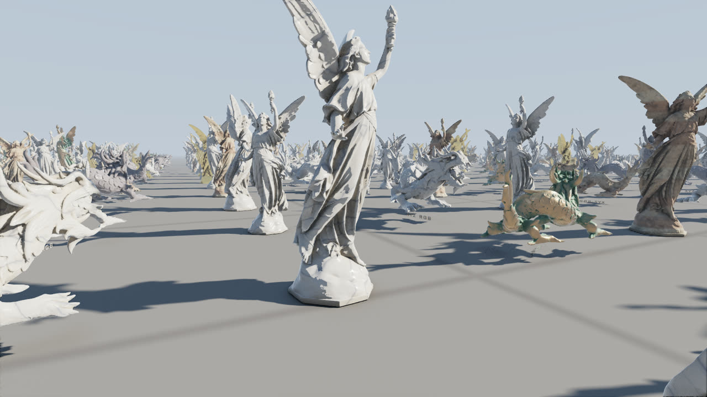
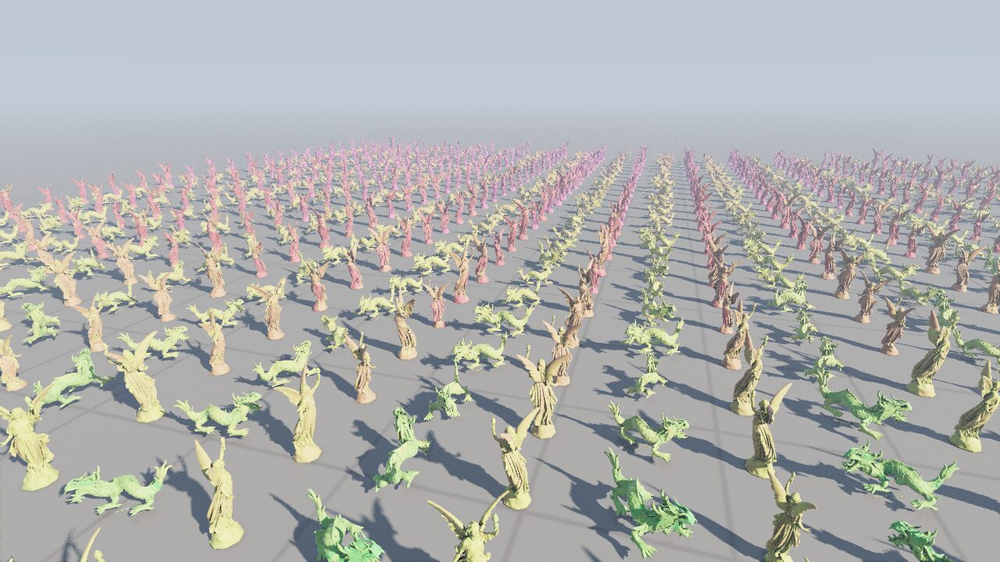
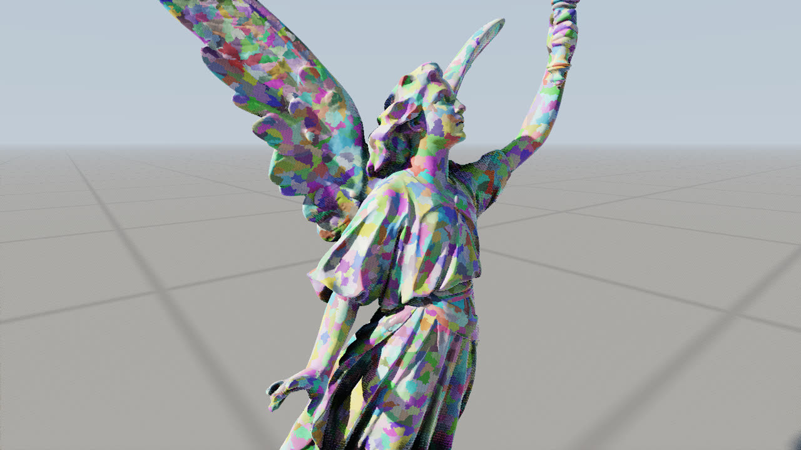
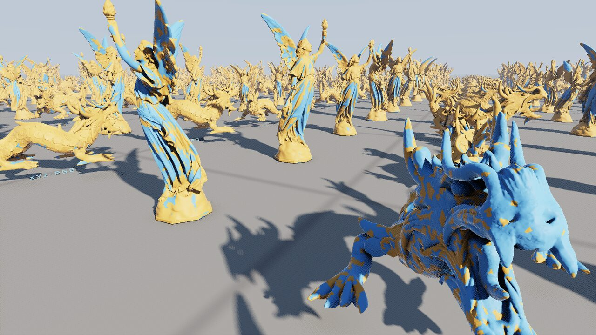
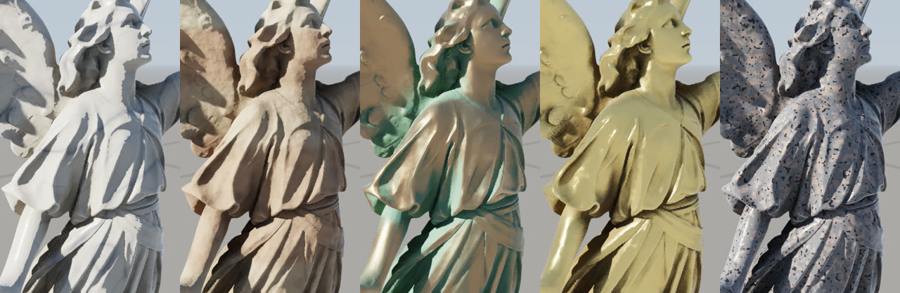
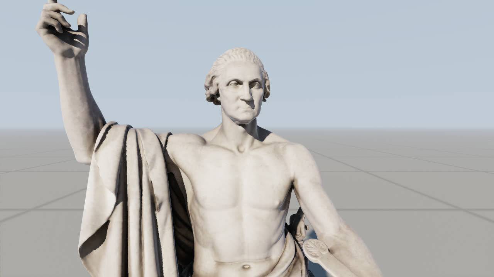
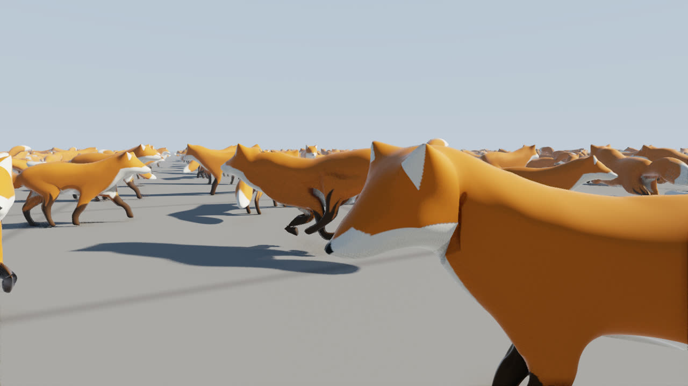

Virtualized geometry from scratch, as in Nanite: every cluster of every statue picks the
coarsest detail within a pixel of the original. Below, a lighter live version, then frames from the native
Vulkan viewer on an RX 9070 XT.
triangles drawn
...
at full detail
...
clusters drawn
...
streamed in
...
picking and drawing
...
A lighter version in WebGL2: one statue, streamed page by page,
every cluster picking the coarsest level within the error allowed, as the full demo does, but on the CPU and
without the crowd, the compute rasterizer or shadows. Drag to turn it, scroll or pinch to zoom.

900 statues of Lucy and the XYZ RGB dragon: 15.9 billion triangles at full detail, drawn at
1920x1080 in 1.48 ms with soft shadows, bounce light, ambient occlusion and antialiasing. About 4.8 million reach the
screen.

LOD levels, blue for full detail through red to magenta for the coarsest. Near dragons draw mid
levels, distant statues the coarsest, and single statues mix levels as they recede.

Lucy, each cluster of up to 128 triangles in its own colour. Clusters are grouped, simplified
and grouped again into a hierarchy where any mix of levels joins without cracks.

Which rasterizer drew each pixel: orange a compute rasterizer, blue mesh shaders. Pixel-sized
triangles are what hardware handles worst, so only the nearest surfaces get it.

Lucy and the dragon have no UVs, so their materials come from noise in each model's own space:
veined marble, layered sandstone, bronze greening in its folds, hammered gold, granite.

Horatio Greenough's George Washington (1840), the Smithsonian American Art Museum's scan: 17 million
triangles and its own 4096x4096 texture, streamed in tiles beside the geometry.

900 Khronos foxes, skinned and animated, each subdivided to 590 thousand triangles and still picking
its level per cluster: errors are measured in every pose of their animations.